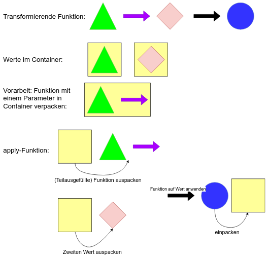

F#: Unser Workshop, der Applicative Functor und das Live Coding - Teil 2
von Martin Grotz, 2020-09-07
Eigentlich wollte ich drei verschiedene Wege erarbeiten, um ein Feld mit mehreren Validierungen zu
prüfen, woran wir im Workshop gescheitert werden. Daraus sind dann doch nur zwei geworden, weil sich aus
dem zweiten heraus organisch eine
Variante ergeben hat, die mir recht gut gefällt.
Variante 1 ist ganz primitiv: In einer Wrapper-Funktion werden die zu prüfenden Argumente einfach
mehrmals angegeben, und alle bis auf eins ignoriert. Aufgerufen wird die Funktion dann trotzdem nur,
wenn alle Validierungen gültig sind.
Für ganz einfache Funktionen wie hier im Beispiel ist das finde ich ein durchaus gangbarer Weg.
Allerdings muss die Wrapper-Funktion dann für jede neue Validierungsregel auch erweitert werden.
Außerdem habe ich neue Namen für die Argumente der Wrapper-Funktion gebraucht, da sind mir die Ideen
ausgegangen:
type Vorname = string
// int -> string -> string option -> DateTime -> Validation
let withDoubleParameters id vorname spitzname geburtsdatum =
// Vorname verdoppelt im Wrapper, aber das zweite Argument wird ignoriert
let createKundeWrapper i (v: Vorname) (_v: Vorname) s g = createKundeValidated i v s g
createKundeWrapper id
<!> startsWithA vorname
<*> endsWithZ vorname
<*> (Success spitzname)
<*> notInTheFuture geburtsdatum
Besser gefällt mir die zweite Variante, die von einer Funktion des Validation-Datentyps aus FSharpPlus
Gebrauch macht: "appValidation" - mit folgender Beschreibung:
Takes two Validations and returns the first Success. If both are Failures it returns both
Failures combined with the supplied function.
Damit garantiert kein Success dabei ist, filtern wir die vorher alle raus.
Der Error-Typ der validate Funktion gefällt mir nicht so gut, aber ich habe es nicht hingekriegt, den
Typparameter so zu definieren, dass es einfach nur "muss die ++ Funktion implementieren" haben muss. Der
Fehler-Typ muss ein Monoid sein, deshalb habe ich da die Liste erzwungen - dann ist das auf jeden Fall
erfüllt.
Dafür gibt es glaube ich eigentlich die Statically
Resolved Type Parameters, wollte bei mir aber nicht so...
Insgesamt bin ich aber zufrieden, denn die Funktion kann beliebig viele Validatoren anwenden und eine
akkumulierte Liste von Fehlern ausspucken:
let validate (validators: ('a -> Validation<'err list, 'a>) list) (input: 'a): Validation<'err list, 'a> =
let errors =
validators
|> map (fun fn -> fn input)
|> List.filter (function
| Success _ -> false
| Failure _ -> true)
match errors with
| [] -> Success input
| failedValidations -> List.reduce (Validation.appValidation (++)) failedValidations
type FancyError =
| NotStartWithA
| NotEndWithZ
| IsInFuture
let startsWithA' s =
if String.startsWith "a" s then Success s else Failure [ NotStartWithA ]
let endsWithZ' s =
if String.endsWith "z" s then Success s else Failure [ NotEndWithZ ]
let notInTheFuture' dt =
if dt > DateTime.Now then Failure [ IsInFuture ] else Success dt
let niceErrorTypes id vorname spitzname geburtsdatum =
createKundeValidated id
<!> validate [ startsWithA'; endsWithZ' ] vorname
<*> Success spitzname
<*> validate [ notInTheFuture' ] geburtsdatum
Bin froh, dass ich da eine Lösung für mich gefunden habe, da das Problem in jedem ernstzunehmenden
Projekt vorkommen wird, bei dem Eingaben validiert werden. Auf github gibt's meinen
Rumprobier-Code auch.
F#: Unser Workshop, der Applicative Functor und das Live Coding - Teil 1
von Martin Grotz, 2020-09-02
Am Montag war endlich wieder Workshop-Zeit: Der Workshop "Von C# zu F# - Einführung in die Funktionale
Programmierung" bei den Magdeburger DevDays.
Und wie jedes Mal, wenn mein Kollege Patrick und ich den
Workshop machen, haben wir uns den Applicative
Functor bis ganz zum Schluss aufgehoben. Denn um dessen Anwendung zu verstehen, braucht man all das, was
wir vorher im Workshop vermittelt haben: Currying/Partial Application, Typen als
Container/Kontext, das Komponieren von Funktionen als tolle Sache.
Die Idee beim Applicative Functor mit seiner "apply"-Funktion ist, dass man nicht wie bei der
"map"-Funktion des Functors auf genau
einen Parameter beschränkt ist,
sondern mit beliebig vielen in einen Container-bzw. Kontext-Datentyp eingepackten Werten arbeiten kann,
da sich der Aufruf beliebig verketten lässt. Perfekt zum Beispiel für eine Erzeugung von irgendwas erst
dann, wenn alle Eingaben erfolgreich validiert wurden.

Und wie jedes Mal sind wir am Live Coding des Applicative Functors gescheitert.
Als wir es das allererste Mal in C# mit der LaYumba-Bibliothek versucht haben,
hatte unser Beispiel fünf
eingepackte Argumente - LaYumba konnte aber nur vier...
Beim zweiten Mal Workshop-Halten hatten wir beim Smart Constructor, den wir mit den validierten
Werten aufrufen wollten, einen falschen Parameter-Typ angegeben, und beim Live Coden sieht man sowas
manchmal einfach nicht...
Natürlich konnten wir das jetzt beim dritten Mal auch nicht auf uns sitzen lassen und haben uns im Zug
auf der Heimfahrt auf
Fehlersuche begeben.
Diesmal wollten wir uns das Leben leicht machen und haben F# statt C# verwendet, und direkt noch
die Bibliothek FSharpPlus eingebunden.
Nur leider hatten die vorher ausgedachten Anforderungen einen Haken: Bei einem Eingabeparameter sollten
zwei Regeln angewendet werden, und beide Fehler gesammelt werden, und mit allen anderen Fehlern aus
anderen Felder zusammengepackt werden. Genau für sowas gibt es in FSharpPlus.Data den Validation-Typ
-
dachten wir zumindest...
Doch der Fall, einen Wert mit mehreren Validatoren zu prüfen und alle dessen Fehler zu sammeln, ist dort
nicht vorgesehen. Mit Bordmitteln kann man bestenfalls den ersten Fehler jedes Felds sammeln - besser
als nichts, immerhin. Aber wir wollten halt das volle Programm, und sind daran dann in der kurzen Zeit
gescheitert.
Mit der genannten Einschränkung liest sich der F#-Code noch recht elegant:
// createKundeValidated :: int -> string -> string option -> DateTime -> Kunde
let createKundeValidated id vorname spitzname geburtsdatum : Kunde =
{
Id = id
Vorname = vorname
Spitzname = spitzname
Geburtsdatum = geburtsdatum
}
// validate :: int -> string -> string option -> DateTime -> Validation<string,Kunde>
let validate id vorname spitzname geburtsdatum =
let notEmpty s =
if String.IsNullOrWhiteSpace s then
Failure "Darf nicht leer sein"
else
Success s
let notTooLong s =
if String.length s > 30 then
Failure "Darf nicht zu lang sein"
else
Success s
let notInTheFuture dt =
if dt > DateTime.Now then
Failure "Darf nicht in der Zukunft liegen"
else
Success dt
let validateVorname v =
v
|> notEmpty
|> Validation.bind notTooLong
// das erste "map" (als Infix-Operator) packt die partially applied function ein,
// die nachfolgenden "apply"-Aufrufe (wieder Infix) füllen im Erfolgsfall jeweils ein Argument weiter aus
(createKundeValidated id)
<!> (validateVorname vorname)
<*> (Success spitzname)
<*> (notInTheFuture geburtsdatum)
Aber wie sähen alternative Lösungen aus, wenn wir doch alle Fehler sammeln wollten? Da dieser Eintrag
recht lang geworden ist, gibt's dafür demnächst einen Extra-Blogpost!
elm-ui
von Martin Grotz, 2020-08-17
In meinem letzten kleinen Elm-Projekt habe ich elm-ui
ausprobiert.
Die Grundidee bei elm-ui ist es, dass man sich nicht mehr mit nackten HTML-Elementen rumschlägt, sondern
semantische Funktionen benutzt, die intern das passende HTML mit passenden Basis-Styles erzeugen.
Statt also z.B. div in div in div zu schachteln und jeweils Flexbox-Klassen ranzupacken, hat man eine
"row"-Funktion, in die man eine "column"-Funktion packt,
in die dann zum Beispiel eine "input"-Funktion mit einem Konfigurations-Record eingefügt wird, bei der
placeholder, label und error-Text automatisch verwaltet werden.
Für einen ersten Prototyp hat sich die Bibliothek als sehr praktisch erwischen: Ich hatte schnell
ansehnliche Ergebnisse, und vieles hat einfach so out-of-the-box funktioniert.
Allerdings bin ich dann im weiteren Verlauf doch an Grenzen gestoßen, und wie es oft so ist: Sobald man
die vorgegebenen Pfade der Bibliotheken verlässt, wird es unschön.
Am Ende habe ich den Motivationsboost vom ersten, ansehnlichen Prototypen mitgenommen und die View
umgebaut auf meinen aktuellen Lieblings-Weg:
Die Nutzung von Tachyons CSS in Verbindung mit der zugehörigen
Elm-Library, um in Elm typsicher Tachyons-Klassen vergeben zu können.
Damit komme ich schnell zu guten Ergebnissen, behalte aber die volle Flexibilität.
Als Nebeneffekt bin ich durch den Fork der inaktiven Original-Elm-Library für Tachyons jetzt auch stolzer
Maintainer
einer Elm-Bibliothek!
Line Breaks in einem Paragraph in Elm
von Martin Grotz, 2020-08-05
Neulich hatte ich für ein Impressum innerhalb einer einfachen Web-App die Problemstellung,
eine einfache mehrzeilige Adresse in einem Text-Paragraph abzubilden.
In reinem HTML ist das kein Problem, und auch in Elm geht das natürlich, artet aber bei mehreren Zeilen
schnell aus:
p
[]
[text "Erste Zeile"
, br [] []
, text "Zweite Zeile"
, br [] []
, text "Letzte Zeile"]
Kürzer, und auch besser mit programmatisch geliefertem Text kombinierbar geht es mit Listen-Funktionen:
p
[]
(["Erste Zeile", "Zweite Zeile", "Letzte Zeile"]
|> List.map text
|> List.intersperse (br [] [])
)
Die Liste mit den einzelnen Teilen kann jetzt aus einer beliebigen Quelle stammen, und muss nicht mehr fest
kodiert sein. Sehr praktisch!
Zwei neue Artikel für iX
von Martin Grotz, 2020-07-02
Auch wenn ich hier im Blog lange Zeit nichts Neues geschrieben habe, war ich nicht gänzlich
untätig:
Ich habe zwei Artikel für das iX-Special "Moderne
Programmiersprachen 2020" geschrieben:
Einen über den Einsatz von Elm in Form einer Web Component, und einen Grundlagen-Artikel über Elixir.
Phoenix LiveView in einer hinter einem Apache gehosteten Phoenix-Anwendung
von Martin Grotz, 2020-02-03
Ich habe in eine bestehende Phoenix-Anwendung ein bisschen Client-Side-Dynamik reingebaut - mit Phoenix LiveView.
Zuerst ging das nach dem Update auf meinem Server (ursprüngliche Anleitung siehe mein
vorheriger Blog-Post zum Thema) nicht, da LiveView gar nicht erst initialisiert wurde.
Der Grund war ziemlich einfach: Ich habe vor dem Bauen des Releases vergessen, die Web-Assets neu zu
erzeugen.
Mit den folgenden zwei Zeilen macht man das - mittlerweile habe ich mir eine build_prod.sh geschrieben,
die alle Schritte nacheinander ausführt:
npm run deploy --prefix ./assets
mix phx.digest
Das nächste Problem war, dass LiveView Probleme mit der Session-Info hatte.
Hier hat es geholfen, eine Anpassung im Projekt in der "endpoint.ex"-Datei zu machen:
Aus
plug Plug.Session,
store: :cookie,
key: "_my_app_key",
signing_salt: "abc123"
wird
plug Plug.Session, @session_options
Dann müssen natürlich die Optionen woanders definiert werden:
@session_options [
store: :cookie,
key: "_my_app_key",
signing_salt: "abc123"
]
Und dann noch für LiveView angegeben werden:
socket "/live", Phoenix.LiveView.Socket, websocket: [connect_info: [session: @session_options]]
Damit hat es dann aber immer noch nicht funktioniert, denn es fehlte noch die Weiterleitung im Apache
vom LiveView-Websocket. Dafür musste ich auf dem Server selbst die Konfigurationsdatei anpassen,
also z.B. in "/etc/apache2/sites-available/041-my-site-ssl.conf".
Da müssen Einträge dazu:
ProxyPass /live/ ws://localhost:<port_des_phoenix_servers>/live/
ProxyPassReverse /live/ ws://localhost:<port_des_phoenix_servers>/live/
Nach Aufspielen der Elixir-App-Version mit allen Änderungen und Neustart des Apache2 nach der
Konfigurationsänderung lief dann endlich alles wieder.